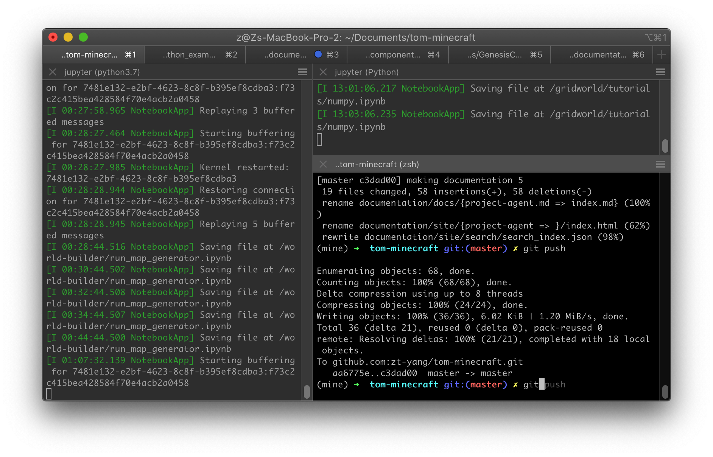

Set up the repository and documentation#
To clone the GenesisCore repository, you need to send Yang your GitHub username to be invited as a collaborator.
Open terminal and go to your favorite work directory (e.g., ~/Documents) to clone the project:
git clone git@github.com:zt-yang/tom-minecraft.git
(Optional) Install PyCharm IDE for debugging#
I use PyCharm for more efficient debugging. It's free to use the Professional version after requesting student license.
(Optional for MacOS) Install iTerm2 for splitting panels#
I use iTerm2 as a replacement for Terminal because it supports multiple tabs and flexible panels when you right click.

(Optional for MacOS) Install zsh for tab completion#
I use zsh for configuring my terminal/iTerm2 app to make my command line experience more efficient. I love its command completion feature, which should be enabled by default.
Important components of the repository#
First-level folders#
/gridworld ## main folder for our project
/world-builder ## extract 2D map from Minecraft world folder
/documentation ## run `mkdocs serve` to see the site offline
...
gridworld folder#
MalmoPython.so ## Malmo package file for MacOS
MalmoPython.pyd ## Malmo package file for Windows
(under construction)